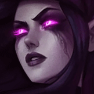

核心裝備
 盧登回音
盧登回音Q 技或 W 技邊緣消耗都很容易觸發，前中期壓血效率高。
 視界專注
視界專注Q 技長距離控制後幾乎穩定觸發，隊友也更容易跟傷害。
 無限寶珠
無限寶珠敵人被反覆消耗進低血線後，無限寶珠能提高收頭能力。
 死亡之帽
死亡之帽補足大量 AP，讓護盾、消耗與大絕反開同時變強。
 虛空之杖
虛空之杖敵人補魔抗後仍能維持技能傷害。

Morgana · 遠程消耗／控制保排型法師
魔甘娜在 ARAM 的價值是持續消耗、限制走位與反制強開。只要黑盾交得夠準，再配合 Q 技綁人與 W 技鋪地，對手很難舒服開戰。
本站評級理由：黑暗禁錮與痛苦腐蝕在單線非常好命中，黑盾又能大幅降低 ARAM 常見強開陣的威脅，功能性和輸出都很完整。
目前本站先依 7.2b 未見額外追加修正的通用基準呈現；若官方後續補充魔甘娜專屬 ARAM 數值，會再同步更新。
Q 技或 W 技邊緣消耗都很容易觸發，前中期壓血效率高。
Q 技長距離控制後幾乎穩定觸發，隊友也更容易跟傷害。
敵人被反覆消耗進低血線後，無限寶珠能提高收頭能力。
補足大量 AP，讓護盾、消耗與大絕反開同時變強。
敵人補魔抗後仍能維持技能傷害。

前期魔力、魔攻與法穿最直接提升消耗與禁錮後傷害。

升級三級鞋後提高魔攻與雙法穿，讓 Q 技接 W 技更有斬殺力。

Q 技控制與 W 技鋪地都很容易讓彗星命中，整體消耗收益高。

補魔力上限讓魔甘娜能更長時間維持施法壓力。
提高 Q 技、黑盾與大絕的使用頻率。

每輪消耗多補一段傷害，有助於把敵人壓進斬殺線。

Q 技命中後能穩定補上額外傷害。

補大絕進場距離、保命或調整黑盾位置都很關鍵。

避免被刺客或突進一套帶走，爭取再丟一次黑盾或 Q 技。
3 技 > 1 技 > 2 技
ARAM 開局三個基礎技能各點 1 級，之後主升 3 技、次升 1 技；大絕能點就點。
用 W 技清兵與磨血，Q 技不要隨便亂丟，盡量等對手被兵線卡位或交掉位移。黑盾優先保護己方最怕被強開的核心。
做出盧登與視界專注後，Q 技綁到人的收益很高。你不一定要主動開戰，但一定要在對面要開的瞬間把黑盾交準。
後期魔甘娜可以在隊友先手後跟進閃現大絕，或者單純站在後面打反手。只要黑盾跟第一發 Q 技沒空掉，團戰很容易往己方傾斜。
 峽谷製造者
峽谷製造者想要更多持續輸出與續航時可以考慮。
虛空之杖需要更早拉高法穿時可提早製作。
無限寶珠想強化收頭與爆發時可以提前。
看遊戲卡片下方分類 → 點相同分類 → 看左側 S+／S／A。
三技能持續傷害與一技能禁錮都能反覆觸發技能型效果。
一技能長時間禁錮與大絕控制能穩定觸發控制類增幅。
持續技能與多段大絕很適合連續技能命中相關的雷霆卡。
二技能黑暗之盾可穩定提供護盾與免控，能利用護盾分類中的核心單卡。
技能暴擊、大絕雙放、投射技能冷卻與持續傷害暴擊都有高價值。
魔甘娜沒有位移，跑速能幫助大絕貼人與遠距消耗後拉開。
7.2b ARAM S+ 第三批：魔甘娜以反開、黑盾保排與遠距消耗作為核心定位；裝備與符文依 7.2b 版本環境與現行站內模板整理。
ARAM 使用獨立於召喚峽谷的資料集；本站會把官方模式平衡、單線 5v5 特性與出裝／符文適配分開判斷，而不是直接複製峽谷配置。